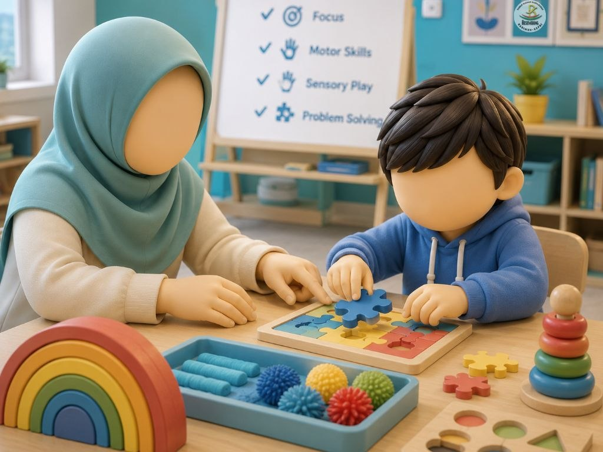
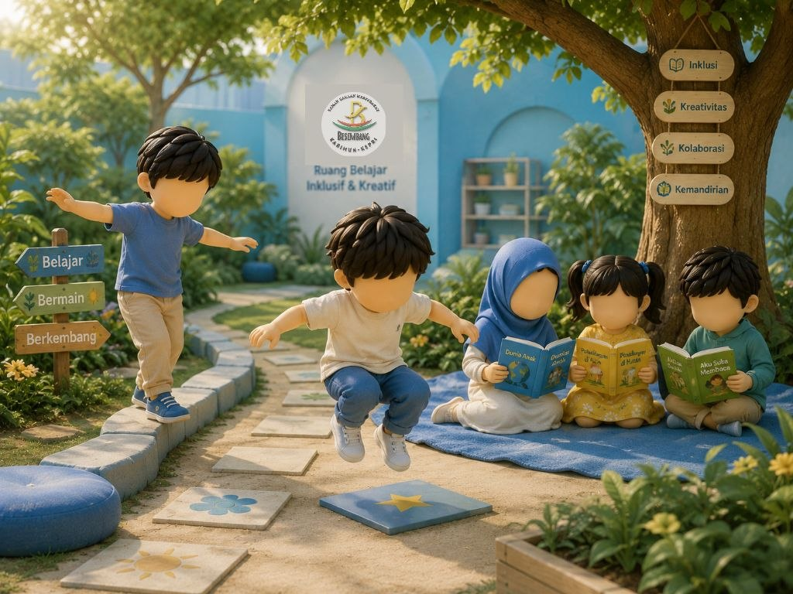

Merawat Fitrah,
Menunaskan Madah
Lebih dari sekadar taman bacaan. Kami adalah ruang inklusif di mana seni, literasi, dan stimulasi sensorik bertemu untuk tumbuh kembang anak.

Belajar yang menyenangkan...

Merawat Fitrah,
Menunaskan Madah
Lebih dari sekadar taman bacaan. Kami adalah ruang inklusif di mana seni, literasi, dan stimulasi sensorik bertemu untuk tumbuh kembang anak.
Belajar yang menyenangkan...
Layanan Inklusif Kami
Pra-Membaca
Rasio 1:3
Fokus bimbingan dalam kelompok kecil yang hangat.
Layanan Terapi
Rasio 1:1
Stimulasi intensif personal selama satu jam penuh.
Homeschooling
Mandiri
Pengembangan kemandirian akademik & life skill.
Layanan Baca
Gratis
Akses literasi gratis untuk siapa saja tanpa terkecuali.
6 Pilar Pembelajaran
Struktur Visual Menenangkan
Penguatan Belajar Bahagia
Keseimbangan Saraf & Emosi
Imitasi & Atensi (Dasar Bicara)
Belajar Multisensori
Menjadi Pencerita yang Aktif